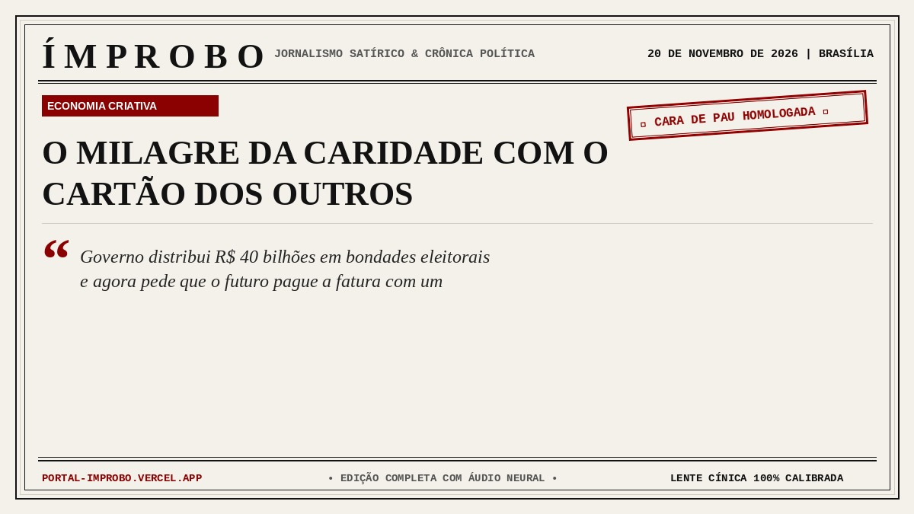
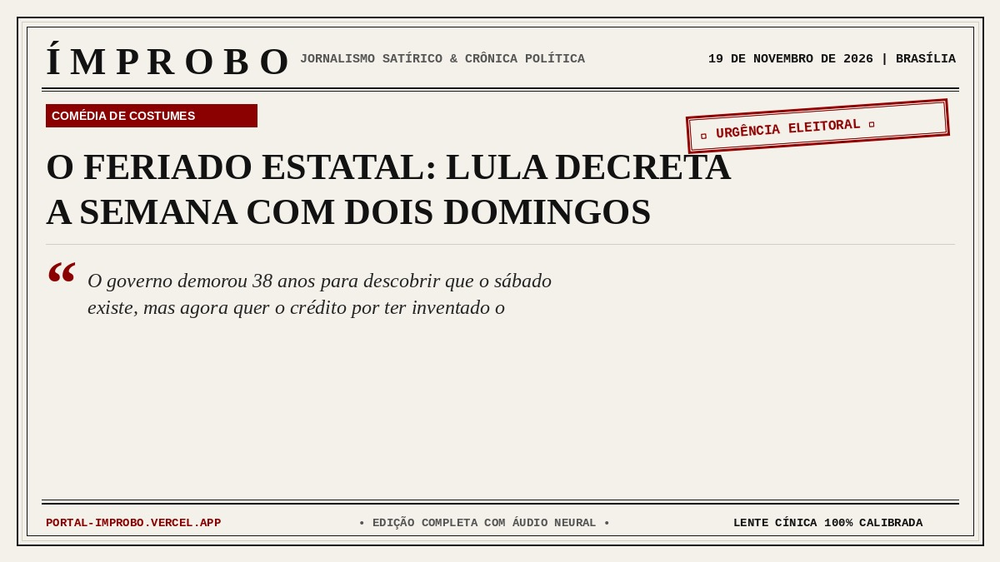
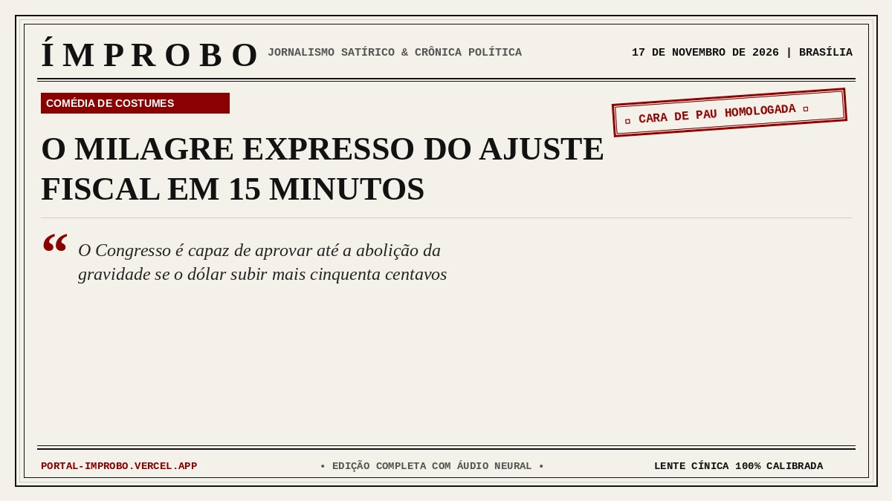
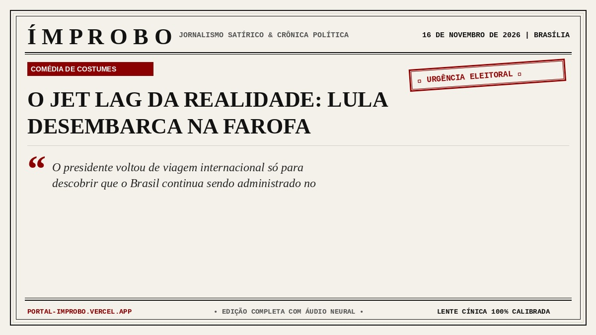
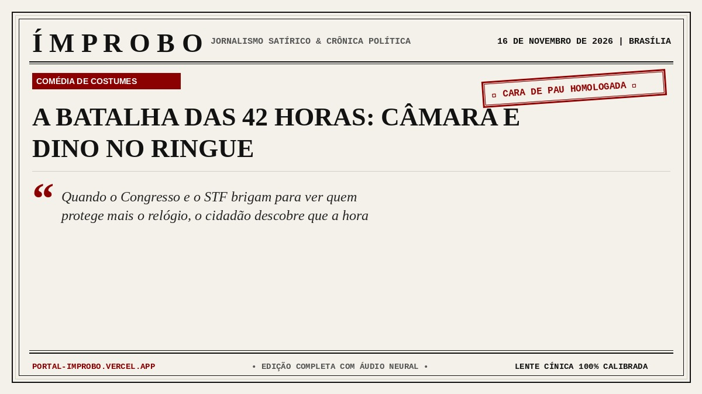
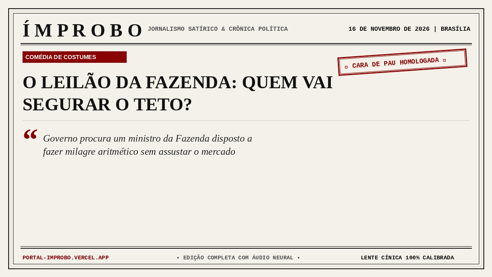

PRÓXIMO CICLO
i
Horários fixos do robô: 08:00, 13:00, 18:00 e 22:00 BRT. Disparado automaticamente via GitHub Actions.
--:--:--
Aguardando BRT...
SERVIÇOS / APIS
i
Status operacional das conexões externas: IA Gemini (redação/arte), feeds RSS nacionais, narração neural Edge-TTS e deploy Vercel.
4 / 4 ONLINE
● Gemini
● Feeds
● TTS
● Vercel
PORTÃO EDITORIAL
i
Portão Mandatório: bloqueia publicação se o texto estiver incompleto, se a caricatura for ausente ou menor que 50KB, ou se faltar áudio MP3.
ATIVO
Regra de Ouro: Arte ≥ 50KB
ACERVO NO AR
i
Total de crônicas satíricas em produção com integridade verificada de arquivo visual e narração sonora.
117 MATÉRIAS
100% com caricatura e áudio
⚡
DISPARO SOB DEMANDA (FURO)
i
Disparo imediato fora da grade horária. O robô faz a raspagem da URL externa ou desenvolve o tema mantendo a Regra de Ouro editorial.
HISTÓRICO DE EXECUÇÕES
i Registro cronológico das rodadas executadas com latência, peso dos artefatos e motivo de retenção em caso de descarte preventivo.| Horário | Status | Crônica | Tempo | Arte | Áudio | Diagnóstico |
|---|---|---|---|---|---|---|
| 20/11/2026 02:09:46 | SUCESSO | O MILAGRE DA CARIDADE COM O CARTÃO DOS OUTROS | 80.1s | 95 KB | 974 KB | Publicação normal validada |
| 19/11/2026 19:26:52 | SUCESSO | O FERIADO ESTATAL: LULA DECRETA A SEMANA COM DOIS DOMINGOS | 103.2s | 100 KB | 1034 KB | Publicação normal validada |
| 19/11/2026 02:25:22 | SUCESSO | O BALCÃO DE NEGÓCIOS DA DOSIMETRIA | 70.7s | 95 KB | 746 KB | Publicação normal validada |
| 18/11/2026 19:18:02 | SUCESSO | O DECRETO DA HORA EXTRA E DA PAZ NA TERRA | 57.9s | 98 KB | 943 KB | Publicação normal validada |
| 18/11/2026 02:49:14 | SUCESSO | FAZENDA CRIA O 'CORTA MAIS, GASTA IGUAL' | 58.8s | 94 KB | 971 KB | Publicação normal validada |
| 17/11/2026 19:42:33 | SUCESSO | O MILAGRE EXPRESSO DO AJUSTE FISCAL EM 15 MINUTOS | 70.6s | 95 KB | 813 KB | Publicação normal validada |
| 17/11/2026 03:32:46 | SUCESSO | SE O MERCADO PODE, NÓS TAMBÉM PODEMOS! | 30.8s | 97 KB | 734 KB | Publicação normal validada |
| 16/11/2026 20:53:17 | SUCESSO | O JET LAG DA REALIDADE: LULA DESEMBARCA NA FAROFA | 91.7s | 96 KB | 860 KB | Publicação normal validada |
| 16/11/2026 07:47:33 | SUCESSO | A BATALHA DAS 42 HORAS: CÂMARA E DINO NO RINGUE | 73.5s | 95 KB | 816 KB | Publicação normal validada |
| 16/11/2026 00:53:43 | SUCESSO | O LEILÃO DA FAZENDA: QUEM VAI SEGURAR O TETO? | 74.1s | 93 KB | 697 KB | Publicação normal validada |
| 15/11/2026 17:39:09 | SUCESSO | O ROMANCE FORÇADO DO AGRO COM A ESQUERDA | 90.8s | 100 KB | 836 KB | Publicação normal validada |
| 15/11/2026 07:41:31 | SUCESSO | BALCÃO DE NEGÓCIOS: 73 VAGAS NAS AGÊNCIAS | 57.1s | 100 KB | 799 KB | Publicação normal validada |
| 15/11/2026 02:39:25 | SUCESSO | A IMOBILIÁRIA DA OTAN: CEDER A CASA PARA GANHAR O WI-FI | 57.4s | 96 KB | 682 KB | Publicação normal validada |
| 14/11/2026 23:18:43 | SUCESSO | CIRCO DE BRASÍLIA: SENADO APROVA TEXTO-BASE DE PACOTE QUE ... | 28.7s | 101 KB | 969 KB | Publicação normal validada |
| 14/11/2026 23:12:52 | RETIDO | A FARRA DO CARIMBO: GOVERNO LULA FINALIZA PACOTE DE CORTE ... (Abortado) | 0.2s | 100 KB | - | Arquivo de áudio neural não encontrado em disco: audio/governo-lula-finaliza-pacote-de-corte-de-gastos-ob.mp3 |
RADAR RSS (PASSIVO)
i Top 5 manchetes monitoradas nos feeds RSS. O robô escolhe e publica a matéria mais quente sozinho; não requer aprovação manual.| # | Veículo | Manchete | Score |
|---|---|---|---|
| #1 | G1 Política | IFI alerta que 'bondades' de Lula na eleição apertam máquina pública e pede ajuste 'profundo' | 116.4 |
| #2 | G1 Política | Moraes libera ações sobre Lei da Dosimetria para julgamento no STF; caso será analisado em dezembro | 101.8 |
| #3 | G1 Política | Pressionado a apresentar nomes da equipe econômica, Lula diz que vai indicar ministros 'quando quiser' | 93.6 |
| #4 | G1 Política | 100 maiores doadores das eleições de 2026 destinaram R$ 163,4 milhões a campanhas e partidos; veja quem são | 92.4 |
| #5 | G1 Política | Governo regulamenta jornada 5x2 nesta quinta-feira; Lula assina decreto com novas regras | 88.8 |
ACERVO AUDITADO NO AR (117)
i Auditoria visual e sonora das matérias publicadas. Confirmação dos pesos em KB da charge editorial e do arquivo de áudio.
95 KB
974 KB
20 de Novembro de 2026
•
259p
O MILAGRE DA CARIDADE COM O CARTÃO DOS OUTROS
Auditado ✓
Abrir →

100 KB
1.0 MB
19 de Novembro de 2026
•
301p
O FERIADO ESTATAL: LULA DECRETA A SEMANA COM DOIS DOMINGOS
Auditado ✓
Abrir →
Auditado ✓
Abrir →
Auditado ✓
Abrir →
Auditado ✓
Abrir →

95 KB
813 KB
17 de Novembro de 2026
•
221p
O MILAGRE EXPRESSO DO AJUSTE FISCAL EM 15 MINUTOS
Auditado ✓
Abrir →
Auditado ✓
Abrir →

96 KB
860 KB
16 de Novembro de 2026
•
238p
O JET LAG DA REALIDADE: LULA DESEMBARCA NA FAROFA
Auditado ✓
Abrir →

95 KB
815 KB
16 de Novembro de 2026
•
225p
A BATALHA DAS 42 HORAS: CÂMARA E DINO NO RINGUE
Auditado ✓
Abrir →

93 KB
697 KB
16 de Novembro de 2026
•
167p
O LEILÃO DA FAZENDA: QUEM VAI SEGURAR O TETO?
Auditado ✓
Abrir →
Auditado ✓
Abrir →
Auditado ✓
Abrir →